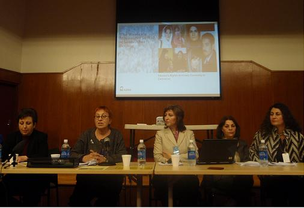

|
|
|
Browsing
Contact Us |
Campaigners |
Face to Face |
Tribune |
Interview |
News |
On the Web |
One Million |
Report
Farsi | Français | German | Italian | Spanish | العربية Also in this section
|
 Where Are You From?By: Faranak Farid Friday 9 April 2010 Change for Equality: During the 54th Commission on the Status of Women, held in New York, in March, which also marked the 15th year after the Beijing Conference on Women (1995) a panel titled: "The Iranian Women’s Movement 15 Years After Beijing," was organized by AIDOS. The panel which was held on March 4, was presided over by Daniella Columbo, AIDOS Director and included women’s rights activists from Iran, including Shirin Ebadi, Parvin Ardalan, Nahid Jafari, Faranak Farid and Rezvan Moghaddam. The following is the text of the speech provided by Ms. Faranak Farid, a Iranian women’s rights activist from Azarbaijan Province in Iran. The text of the speech was provided by Ms. Faranak Farid and appears here as submitted: Is ethnicity important in women’s struggle for their rights, at all? Studying English in middle school, this question seemed an exciting one. It made me imagine myself abroad and answer it proudly. But, this innocent imagination was shattered. Yes, I grew up as a woman facing the reality of much discrimination. Discriminations that kill you and re-kill you, shape you and reshape you, frame you and reframe you to the point that you don’t know who you are. Being a woman from the Middle East simply signifies some facts of gender inequality. Hearing the name of Iran may remind one, of significant roles of brave women in struggle to improve the society and elevate women’s status in the public and private lives. You might have heard of the growing movement of women in such a society with anti-women or male-dominated attitudes, traditions, written-unwritten rules and rights. But this is not the whole story! The name of a country may indicate some things explicitly, while many other things remain uncovered or implicit. In order to understand the role of ethnicity as an added burden in women’s struggle for their rights, one needs to look at the whole picture. Azerbaijanis as nearly one-third of the country’s population , along with the other ethnicities such as Kurds, Arabs, Lurs, Baluchies, Mazandaranies and Gilakies, Turkmans, and the tribes like Bakhtiyries and Qashqaies have been deprived from their economic, social and cultural rights, as well as their civil and political rights and been marginalized. These ethnic groups do not even have a right of education in their mother tongues. There is only one formal language _Farsi (Persian)_ in this country. Due to not having this primary right, women of ethnic groups have the least representation, or they give up their mother tongue in order not to face more discrimination. With this background, it is obvious that women face complicated challenges to their human rights, both as members of marginalized ethnic groups and as women in a predominantly patriarchal society. Added to gender inequality, poverty, living in rural areas and being a part of suppressed ethnic group, has created more and more barriers for women. As in the case of Raheleh from rural Azerbaijan who was forced to marry at the age of 14, many women face different forms of violence such as beating and rape by their husbands, and other bestial behaviors. Such violent treatments turned Raheleh into a murderer who was executed after imprisonment. She was told by her assigned lawyer to defend herself, while she didn’t even know what "defense" meant in Farsi language. Sharing the problems of the whole society, ethnic groups have experienced more regressive and oppressive trends. Of course, based on the rate of the regress of some of the ethnics, situation becomes worse. Among religious minorities, for instance, religious difference is an additional basis of discrimination and deprivation. Suicide rate among women is four and a half times higher than men in Iran, ranking third in the world. However, the self immolation, worst kind of suicide, is highest among ethnic groups, such as Kurds and Lurs, as well as honor-killings that are usually left with no penalty. Also female genital mutilation is a less-known problematic issue in some regions of Iran. As reported by women activists, some of the specific issues facing women in the poor and underdeveloped province of Sistan-Baluchistan include: forcing girls to early marriage to old men for money; marriages with no registration in register offices; addiction …and so on. In this region, like in Khuzestan , Arab areas, generally poor hygiene and shortage of fresh water are among major actual problems. Migration has been high in all marginalized parts _specifically among men with all its consequences for women and the family. Race, ethnicity, gender, language, culture, social class, religion, geographic areas of inhabitant, disability,… are among the factors that produce multiple discrimination. Most of our women are facing almost all of them at the same time and in this complicated situation they lose their self-confidence and feel overwhelmed. The ethnic groups are not only repressed by the holders of power but also their problems are not put into consideration by even most of the intellectuals. In brief, the ethnic’s issue needs an urgent attention both at national and international levels. Women’s rights activists in these provinces are simply labeled as "political activists" and "separatists" on one hand. On the other, these women within their ethnic movements are marginalized from decision-making roles by some of their supremacist men. But, despite all these, Azerbaijani women activists along with other women activist from all other parts of the country are determined to vindicate their human rights. Also during the past 15 years_ like before_ they have tried to use any chance and seek new opportunities to drive the women’s movement ahead and also express themselves especially via reading and writing in their mother tongue; and participating in all aspects of social life and, practice women’s rights as well as other human rights in order not to give any of them up. Thank you |